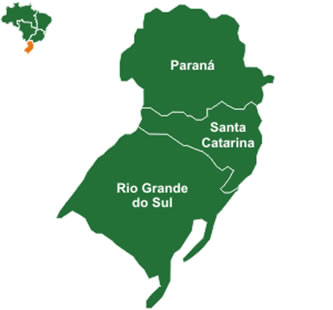
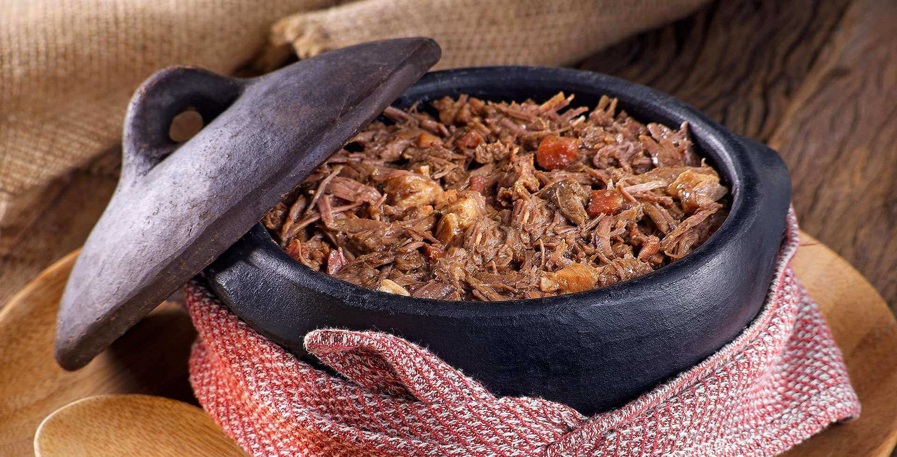
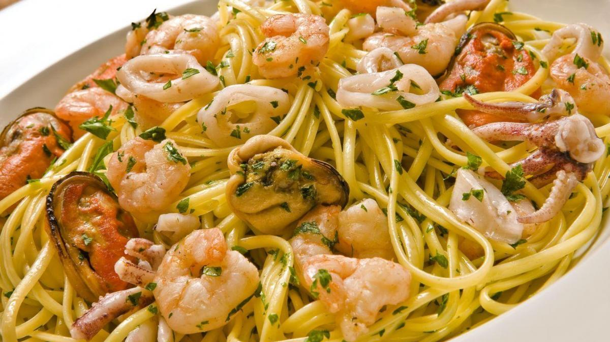
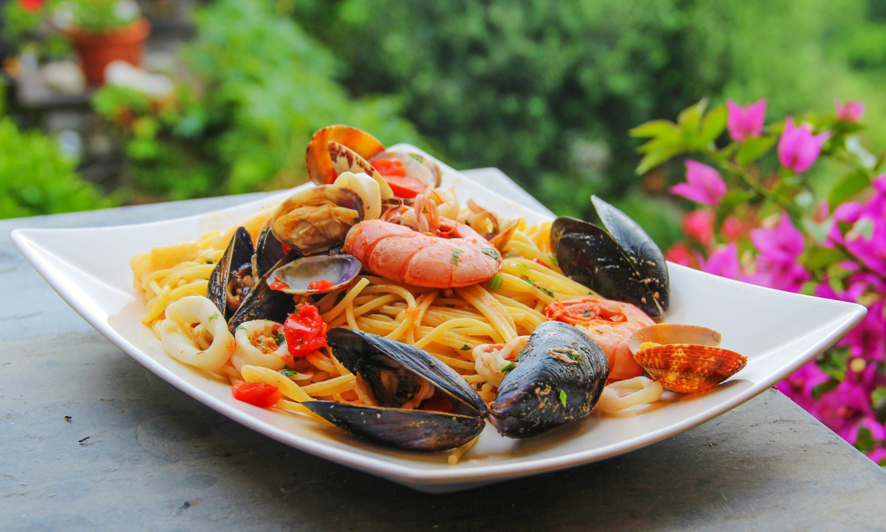

Morda a Borda
Não há limites para uma alimentação saudável.
Início •
Regiões
(Norte •
Nordeste •
Centro-Oeste • Sul •
Sudeste) •
Sobre Nós •
Referências
Região Sul

A Região Sul possui uma culinária repleta de pratos quentes para harmonizar com o clima frio
e que, como em outras regiões do
Brasil, agrega referências de muitas culturas.
Tanto os povos indígenas quanto os colonizadores europeus e os escravos africanos marcaram
fortemente os hábitos
alimentares dos estados do Sul do País, e é por isso que Paraná, Santa Catarina
e Rio Grande do Sul têm pratos
tão característicos.
"Devido ao clima, essa região atraiu muitos europeus durante os séculos
XIX e XX,
o que possibilitou um processo de colonização diferente de outras regiões brasileiras."
"O clima na região Sul, devido à sua localização sob o Trópico de Capricórnio,
é o subtropical.
Esse clima está presente em toda a região, exceto no extremo norte do Paraná,
onde ocorre o clima tropical de altitude."

Fortemente influenciada pela cultura indígena, sementes, frutas e raízes marcam muito a
gastronomia desse estado; prova disso são os inúmeros pratos que levam o pinhão.
Além do consumo de milho, cuscuz, mandioca e sua versão em farinha e de pamonha,
a culinária paranaense também recebeu heranças dos portugueses que desembarcaram
no litoral do Paraná, trazendo consigo diferentes temperos e modos de preparo.
A contribuição luso-açoriana em águas catarinenses
foi introduzida pelos pratos
ligados aos frutos do mar e pescados. Então, nada melhor que aproveitar
esses
traços portugueses e açorianos, e saborear o que de melhor
a costa litorânea
pode trazer.
Falando em colonização europeia, no Rio Grande
do Sul, alemães, espanhóis
e italianos deixaram seus legados por todos os
lados.
Da tradicional polenta e galeto ao churrasco, os gaúchos são fortemente
inclinados aos pratos quentes
e às carnes vermelhas. Além dessa forte referência,
portugueses, jesuítas, indígenas,
uruguaios e argentinos vincularam tendências
na culinária sul-rio-grandense.
Receita de Espaguete com Frutos do Mar

Ingredientes
2 colheres (sopa) de manteiga sem sal
2 dentes de alho picados
200 g de mexilhões limpos
200 g de camarões médios limpos
200 g de lulas limpas cortada em anéis
2 tomates grandes maduros, sem pele e sem sementes, picados
2 sachês de Tempero SAZÓN® Laranja
1 pitada de sal 2 colheres (sopa) de salsa picada
1 pacote de espaguete cozido "al dente" (500 g)
Modo de Preparo

Em uma panela grande, coloque a manteiga e leve ao fogo alto para derreter.
Junte o alho e refogue por 1 minuto, ou até dourar.
Acrescente o mexilhão, o camarão, a lula, o tomate,
o Tempero SAZÓN® e o sal, e deixe cozinhar por 4 minutos, ou até que fiquem macios.
Adicione a salsa, o macarrão cozido e misture delicadamente.
Retire do fogo e sirva em seguida.
DICA: Se desejar, ao servir, salpique queijo parmesão ralado.
Aliás, os peixes são mais saudáveis do que imaginávamos,
pois são ricos em proteínas,
vitaminas do complexo B,
vitamina B12, cálcio, potássio, e muito mais. Porém é
preciso tomar cuidado no consumo desses alimentos
devido ao colesterol presente neles
e porque alguns deles - como camarões e lulas -
causam reações alérgicas
em algumas pessoas. Mas, consumindo-os moderadamente, é
possível aproveitar todos
os benefícios dos frutos do mar para a saúde.
© Airton Mesquita, Técnico em Nutrição e Dietética, 2023; IV FCAC
(Feira de Ciências, Arte e Cultura); EEEP Leonel de Moura Brizola.